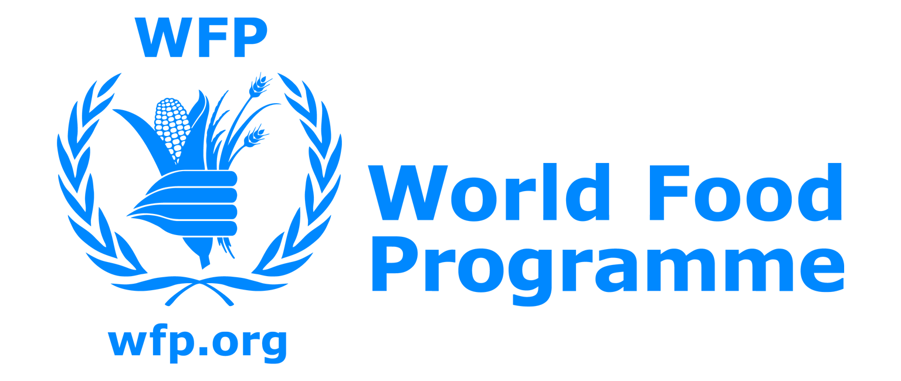

Investigating Global Nutrition
Malnutrition is a Global Problem
Every country is affected by malnutrition whether directly or indirectly. The Global Nutrition Report began in 2013 as a way to measure various nutrition and health, political, social, and economic metrics globally, and thus be able to classify countries by malnutrition status and track their progress.
Although we traditionally think of malnutrition as undernutrition (wasting, stunting, underweight), there are actually 3 main categories of malnutrition according to the World Health Organization [2]:
- undernutrition: wasting, stunting, or underweight
- micronutrient-related malnutrition: deficiencies or excess micronutrients such as calcium
- overweight, obesity and diet-related noncommunicable diseases
Tracking Progress
The Global Nutrition Report was first and foremost a means of tracking progress on the "commitments made by 100 stakeholders spanning governments, aid donors, civil society, the UN and businesses" [1]. Two types of malnutrition that the Global Nutrition Report tracks are obesity and diabetes. In the 2018 report, it identifies which countries are on track to reach pre-determined goals, and which are behind, as well as the percent of the male and female population that have these conditions.
Is malnutrition in general a regional, subregional, or
country level problem? What about diabetes or obesity?
Play around with the tree below to see for yourself! Select a track and click on nodes
to see if the country, the majority of the region, or the majority of the
subregion is on track or suffers from the selected condition.
Diving Deeper: Micronutrients and Diet
One thing many people often don't realize is that micronutrients and diet are also
important facets of malnutrition.
While media in developed countries often produce content about diet and nutrition
and governments in developed countries often promote certain health behaviors,
the Global Health Nutrition Report is one of the first efforts to estimate
dietary component and micronutrient consumption all over the world.
The 2018 Global Health Nutrition report estimates daily intake in grams/person of
several dietary components and micronutrients.
You may have noticed a drop down menu on the top right of the screen.
Pick a dietary element from the dropdown above to focus on for the
next several slides.
You can change the feature in focus at any time.
Can you guess which countries consume the most and least of your chosen food or nutrient?
Possible Underlying Determinants
Now that we've seen a couple trends in obesity and micronutrient consumption, let's explore possible underlying determinants of these phenomena.
What role does money play in malnutrition?
Under 5 mortality rates (per 1000 live births) are another indicator of malnutrition.
If we look at the relationship between that and per capita GDP, we are not surprised
to see a correlation: richer countries in general have lower under 5 mortality rates.
Over time this relationship holds. Moreover, we see that the majority of countries' child mortality rates
fall over time and countries tend to get richer. Some notable events we notice are that in 2010 Haiti's
child mortality rates temporarily goes up, likely due to the 7.0 magnitude earthquake they
experienced that year, and in 2009, GDP per capita falls likely due to the global recession.
*Note: We are using 2017 population data for all years, due to lack of data.
Let's Talk Policy
Another important determinant is government policy. Let's see if there's any relationship between consumption level and policy. Brush over the histogram below to select countries within a certain range of consumption. If no brushing is in effect, all are included.
The pie charts show the percent of selected countries that have:
- a sugar sweetened beverage tax (Sugar Tax)
- a sodium target included in national policies (Sodium Plan)
- a child wasting target included in national policies (Wasting Plan)
- a childhood overweight target included in national policies (Child Overweight plan)
What can we do to help?
As you've hopefully noticed, malnutrition is much more widespread than we realize. The good news is that there are so many small ways to help both your local and global community!
There are so many website that you can learn more about global malnutriton.
The Global Nutrition Report is just one of many great resources to learn about all forms of malnutrition. A couple websites you can visit next are the World Health Organization's nutrition section, the International Food Policy Research Institute, and Scaling Up Nutrition.
Consider volunteering with or donating to a local or global organization that fight malnutrition.

About Us
This website was made by Estefania Lahera, Chris Cheon, Kamila Czachorowski, and Winnie Wang as a final project for our CS171 Visualization class. We would like to extend a huge thank you to our TF, Robert Roessler, for his help and guidance on our website.
Our team name was the Golden Doodles, and so we found "spirit Goldendoodles" for all of the team members and for Rob as well. Hover over our photos to see what we'd look like as Goldendoodles!
Chris Cheon
Estefania Lahera
Kamila Czachorowski
Winnie Wang
Robert Roessler
Data
References
- https://globalnutritionreport.org/about/
- https://www.who.int/news-room/fact-sheets/detail/malnutrition
- https://www.nytimes.com/2018/10/12/well/live/are-calcium-supplements-safe.html
- https://www.latimes.com/science/story/2019-09-30/researchers-question-need-to-cut-back-on-red-meat
- https://en.wikipedia.org/wiki/Got_Milk%3F
- https://www.nationalgeographic.com/magazine/2013/08/